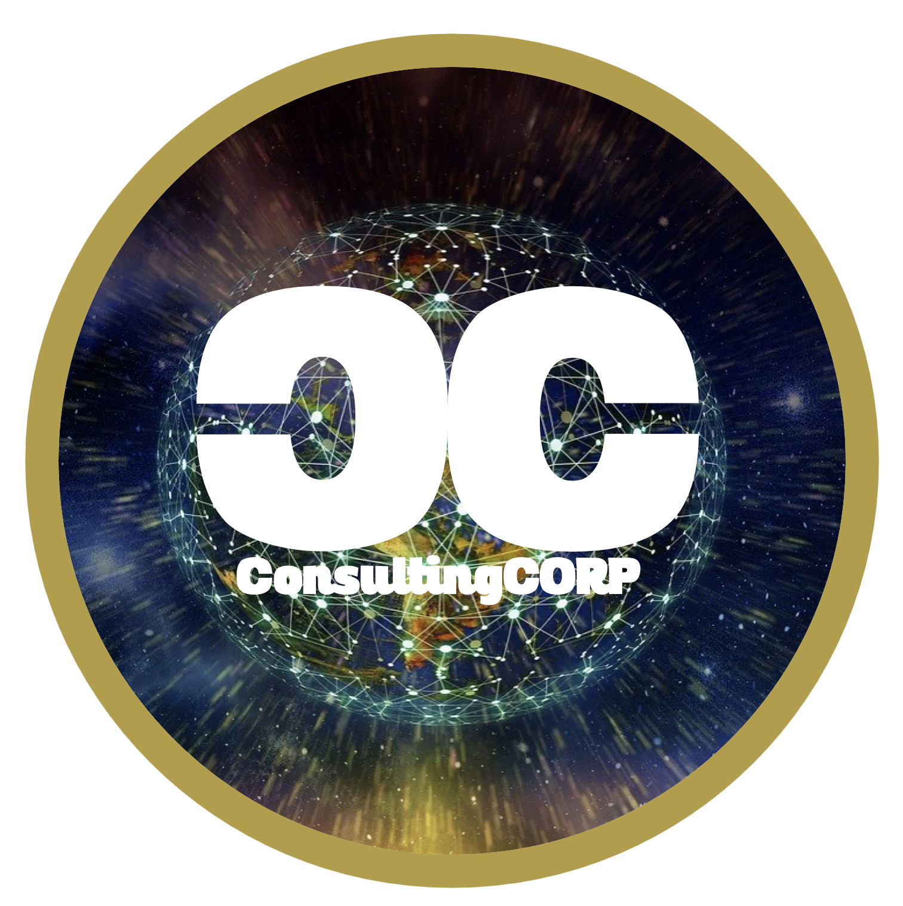
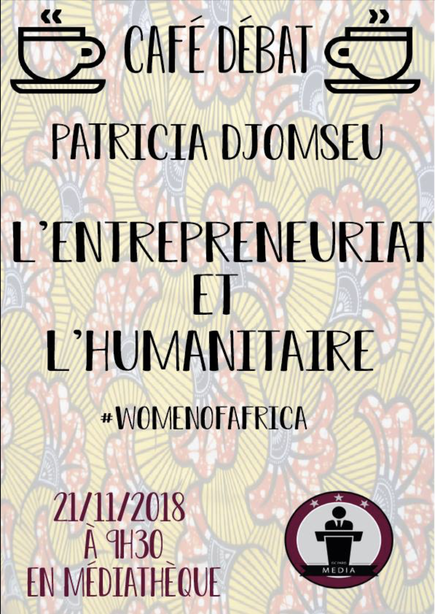

Création d'une maquette pour une application de voyage fictive effectuée pour le cours d'anglais en Master 2.
Création d'un logo pour un projet de création d'entreprise fictive pour le cours de business Plan en Master 2.
Création d'un logo pour une application de voyage fictive effectuée pour le cours d'anglais en Master 2.
Création d'une maquette pour une entreprise fictive qui souhaitais être présent sur internet.
Post publié sur la page Facebook de ISC Média dans le but de remercier ISC Solirace pour la journée du 22/11/2018.
Création pour une présentation en classe.
Création du logo ISC Média pour la période de Nöel.
Création d'une maquette pour une entreprise fictive qui souhaitais être présent sur internet.

Création d'un logo pour une entreprise de consulting fictive dans la transformation digitale.
Création d'un carte pour un anniversaire.
Création d'une affiche pour le café débat de ISC Média.
Story Instagram pour le compte de @Pict.cit.
Post Instagram que l'on m'a demandé pour un recrutement.
Création d'une affiche pour le café débat de ISC Média.

Création d'une affiche pour le café débat de ISC Média.